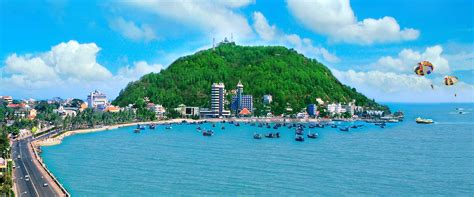

Vacation
Intro
My most recent vacation, or rather, an annual event for our family, is a trip to Da Nang and places around it. After the pandemic we could finally go with each other. But this is probally my last time having a vacation like this because of schools.
The trip
Ba Na Hills was always the first location to start. Though it’s gotten quite stale this couple of years, I still enjoy the scenery and buildings there. Though it’s heavily medieval western inspired, I still liked the view.
After 3 days of relaxing there, we went down to Hoi An. Pho Co is a must-see area so I have to go there wherever possible. And though it was full of people, I still had fun enjoying their cuisine such as banh my and com ga. But in the morning, somehow western hotel food still made me feel comfortable.
We made time to have a few hours left in Vinpearl. Going on rides was scary for me at first, but after the first try, and because of the lack of people there.
I took each of the rides at least 3 times. Though it was thrilling, nothing made me feel better than beating kids at arcade games there again and eating overpriced KFC. But that’s all in the past, and I no longer do that.
Vung Tau
This year’s a little bit longer than the other years, we also went to Vung Tau to visit my uncle there too.
The beach there was nice, though I’m the the type to be fond about it. But my cousins do enjoy them a lot.
There isn’t much in Vung Tau, but everything there is so chill and cool that I’d consider it one of the places I’d go to when retired.
Going back home
After the trip, we finally went home, and because I study at FPT, summer doesn’t really exist and I had to get back to studying right away.